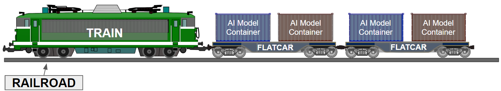

Currently working at an edtech startup, Riiid.
Full-stack developer, system architect, researcher, and dreamer.
...
The page is moved to https://chanyou.page
My research and development interests lie in computer systems, human-computer-interaction, machine learning, and ubiquitous computing. :)
My Google Scholar is here
I have worked on the projects listed below.
[Google Play] iOS App is unavailable now
TRAIN is a fully scalable and highly available dataflow execution engine for serving AI services of Riiid.
Also, our team is developing FLATCAR (AI service bootstrapper for leveraging TRAIN) and RAILROAD (Error and statistics logging framework for TRAIN and FLATCAR)
FROG RAVEN is the first system for optimizing rendering rate in mobile games by leveraging human visual perception. The system reduces game app's rendering rate whenever the succeeding frame is predicted to be perceptually similar enough. As a result, it optimizes the power consumption of mobile games without any modification of codes or binaries like a black magic!
Accepted at MobiCom'17 and introduced at Microsoft Research Blog!
[1-min Video], [Demo Video 1] , [MSR Blog]
TalkBetter is a system for helping children with language delay. Language delay is a problem of children who do not acquire the expected level of language at their ages. It can become a lifelong risk factor if the children are not treated on right time. Through proper conversations between the children and their parents, language delay can be cured. The parents should be cautious in their conversation. TalkBetter helps parents to improve their conversation habit in daily parent-child-conversation. It intervenes in the conversations and points out the bad language habits of parents in real-time.
Accepted at CSCW'14, Best Paper Award!
SocioPhone is a platform for monitoring people's conversations to support the interaction-aware applications in daily life. The system monitors conversation of people and extracts the meta-linguistic contexts that provide useful information about conversations excluding semantics which causes privacy problems. For people to use the system in daily life, the system should be energy efficient and robust. To achieve the requirements, we developed the volume-topography-based method for conversation monitoring. The method leverages multiple phones in same conversation session and makes a 'volume-topography' to detect the turn-taking which is the building block of conversation.
Accepted at MobiSys'13, Best Demo Award at HotMobile'13
Carpool Network is a novel route-based carpool matching system.
Back in the day(2011), carpool matching services were region-based. They just matched the people who have similar destination and departure point. This approach made some burden for users. They needed to estimate the amount of detour distance when they are inviting or joining in a carpool. Also, it missed the opportunity to pick a passenger in the middle of a route. To remedy this, we developed the system, Carpool Network.
Video here
Barcodee(barcodee.io) is an application for searching product-related information including price comparison and Fukushima(radioactive) products alert(RadDog).
Azgag(azgag.com) selects and shows top issues in popular communities in Korea.
Click here to download